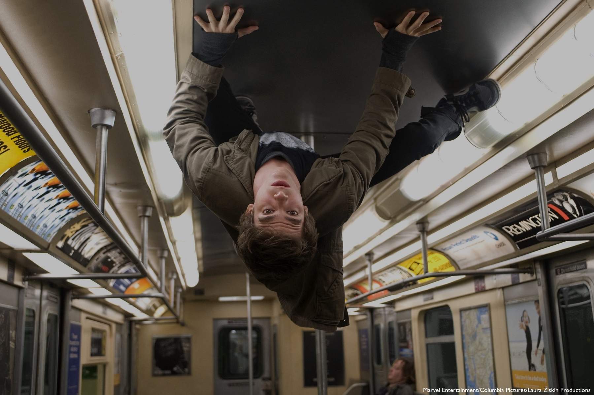

WHAT CAN ENGINEERS
LEARN FROM SPIDER-MAN?
ABOUT THIS PROJECT
This project, entitled ‘What can engineers learn from Spider-Man?’ is my submission for the 2017 High Master’s Prize. In terms of personal goals, I first hope that it will serve as a light-hearted and accessible yet challenging subject matter with which I can practice and further develop my maths/physics abilities. I then hope that the research I do will help broaden my perspective in terms of the applications that problem-solving and different materials might have in the world, and give me a deeper insight into engineering.
Due to the nature of my project having to constantly reference digital formats such as film/video, animations and pictures, I felt that housing the project in a web format would be a more intuitive and convenient way to present my work. Over the course of the project I will write this website from scratch, which will help me hone another skillset as I go along.
I finally hope that beyond my own personal development goals, this website could serve as an educational resource for other students and the wider community – I hope that juxtaposing the trivial and the real world will provide an interesting link to science and engineering that people may not have had the opportunity to experience before.
Extra information: references are given at the bottom of each page and are done according to the Harvard Referencing System.
I hope you enjoy,
Jonathan Routley
ABOUT THE WEBSITE
I wrote this website from scratch, teaching myself HTML and CSS as I went along. I've used some basic JavaScript but am yet to really delve into that world - perhaps something for next time/future updates that would definitely lend itself to improvements. All of my code is open source and is available here.
CONTENTS
1. The Physics of Spider-Man
In this section we will take on the roles of physicists inside Spider-Man's world and look at trying to quantify some of the supernatural qualities that Spider-Man displays. For instance, how strong are his webs actually? How fast would he be able to swing? Start here to find out more.
2. Translation to the Real World
This second section builds on the findings of the first and tries to explain how we might be able to imitate and realistically reproduce equivalents of Spider-Man's inventions in our own world, given the technological advances that we have already made.
3. Applications & Reflections
In this last section, we will primarily look at how engineers and scientists might find uses for the materials and inventions we witness in the Spider-Man world, and the revolutionary effect that they might have. On top of this, there will also be reflections and assessments on the project as a whole.
{kind=link}
{kind=link}